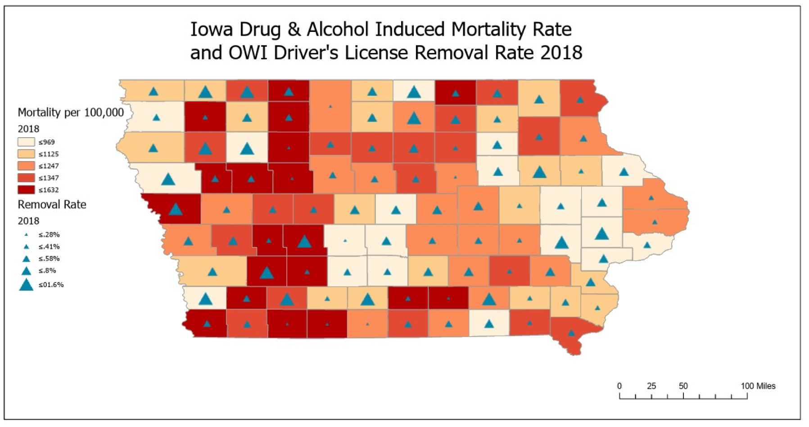

In building a website for exercise 2, I choose to display maps regarding substance use in Iowa, as this is a topic I am working on for my mini thesis and have used in previous course work. I wanted to use this exercise as an opportunity to compare a map I created for my Introduction to GIS course with other maps across the web.
The map below is a map I built for my Introduction to GIS course. I also presented this map as part of a poster in a session for the Department of Human Development and Family Studies with my Major Professor Cass Dorius. This map shows the average mortality rate per 100,000 of Iowa counties. This data is mortaltity data from the Center for Disease Control and Prevention. I also included the rate of Operating While Intoxicated Driver's License Revocations by calculating the number of OWI license revocations in 2018 provided by the Department of Transporation and divided this by the number of licensed drivers per county reported by the Department of Transporation. The map indicates a relatively low OWI license removal rate along the southern border. This map was uploaded with a file path
This map was uploaded via URL link from The University of Iowa. This map shows data from death certificates that reflected prescription opioid overdoses from 2002-2014. It shows the highest opiod mortality rates during this time apeared in the central south western part of the state.

This map was uploaded from OpenStreetMap and uploaded with a HTML iframe. When you comapre this map to the maps above, you can notice how mortality rates overlay with Iowa cities.